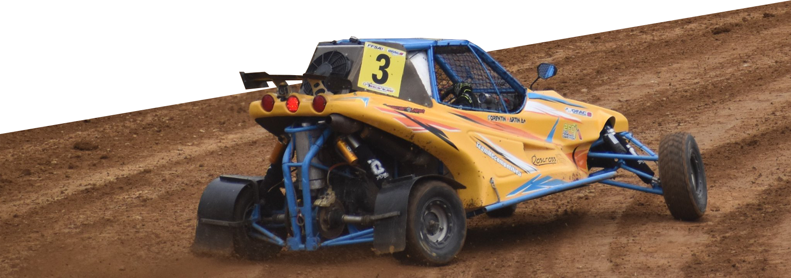

Où ?
- 1 - Mauron (56)
- Meilleur résultat : 2ème (2022)
- 2 - St Junien (87)
- Meilleur résultat : 1er (2019)
- 3 - St Vincent des Landes (44)
- Meilleur résultat : 1er (2014)
- 4 - Elne (66)
- Meilleur résultat : 11ème (2022)
- 5 - Steinbourg (67)
- Meilleur résultat : 5ème (2019)
- 6 - Allogny (18)
- Meilleur résultat : 1er (2014)
- 7 - Aydie (64)
- Meilleur résultat : 2ème (2019-2021)
- 8 - Is sur Tille (21)
- Meilleur résultat : 1er (2019)
- 9 - Mazan (84)
- Meilleur résultat : 2ème (2021)
- 10 - Faleyras (33)
- Meilleur résultat : 1er (2019)
Des milliers de kilomètres sur les routes de France au programme, de la Bretagne aux Pyrénées en passant par l’Alsace ou la Gironde, une saison du championat de France est une grande aventure à vivre !
